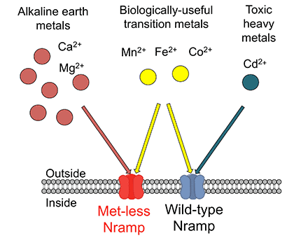

News Archives : 2016 : Panning for Precious Metals [Gaudet Lab]
by Aaron T. Bozzi and Rachelle Gaudet
August 29, 2016
When we think of the chemical elements of life, the “big four” of carbon, oxygen, nitrogen, and hydrogen leap to mind, and rightly so, as they make up over 96% of human body mass. However, to remain healthy we require an adequate supply of more than a dozen other elements, which all organisms must acquire from their environments, while avoiding toxicity from over-accumulation. Most are metal ions, some of which (like iron, manganese, and cobalt) are scarce, whereas others (like calcium and magnesium) are orders of magnitude more abundant. In a recent paper (PDF) we illustrate how evolution has exploited the chemical properties of its repertoire of protein building blocks, or amino acids, to enable organisms to sort through metals they encounter to specifically take up the rare ones they need to survive.
The Nramp family of metal transport proteins allows organisms to acquire the metabolically-essential metals iron, manganese, and cobalt. These proteins reside in cell membranes and provide a pathway for positively charged metal ions to enter the cell. Nramps discriminate against the ubiquitous metals calcium and magnesium, favoring iron, manganese, and cobalt. But they also provide a pathway for the uptake of toxic heavy metals like cadmium, lead, and mercury, a puzzle unexplained until now. To understand the biochemical basis of this metal selectivity, we investigated the protein’s metal-binding site, which consists of four amino acids that bond with the metal to stabilize it during the transport process. We found that a conserved methionine plays the essential role of recognizing which metal ions Nramp should transport and which it should reject. Indeed, by replacing the methionine—which uniquely uses a sulfur atom to bond with metals—with other amino acids that use oxygen, we could tune the selectivity profile of the transport protein.
To understand how this works at the atomic level, we turned to inorganic chemistry, which categorizes metals based on how strongly they interact with non-metals (like the sulfur and oxygens in Nramp’s amino acids). Alkaline earth metals like calcium and magnesium interact poorly with sulfur but strongly with oxygen, whereas the opposite is true for heavy metals like cadmium. Accordingly, we observed that replacing the methionine sulfur with oxygen (by substituting methionine with a different amino acid) both improved transport of magnesium and calcium and impaired transport of cadmium. Interestingly, the biologically-useful transition metals iron, manganese, and cobalt—which bond well with either sulfur or oxygen—were transported effectively with or without the methionine being present. Therefore, the main purpose of the methionine is to exclude the alkaline earth metals (which are nearly a million times more abundant environmentally than iron or manganese) thus enabling organisms to find the essential metals they need within a sea of calcium and magnesium. However, this is not a flawless adaptation because the methionine also increases transport of the toxic metal cadmium. Yet the typically very low abundance of toxic heavy metals means that this usually is a minor flaw. Indeed, we believe the methionine residue represents an evolutionary trade-off: while it is essential to organisms acquiring the rare metals they need, it also makes them much more susceptible to heavy metal poisoning.
In summary, our results provide an atomic-level explanation for the role of the Nramp metal-binding methionine in conferring selectivity against the abundant alkaline earth metals calcium and magnesium and thus enabling the specific uptake of the intended transition metal substrates despite their environmental scarcity.
